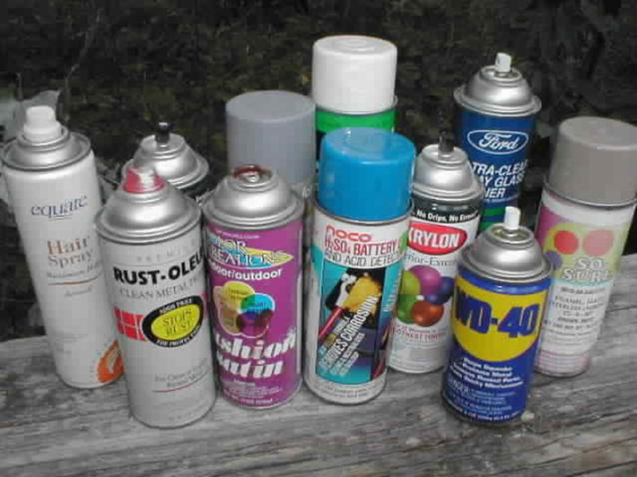

Tipos de Inhalables
Clasificación de los inhalables más comunes y ejemplos de cada uno.
1. Solventes Volátiles
Son líquidos que se evaporan rápidamente y producen vapores tóxicos.
- Pegamentos industriales y escolares
- Thinner
- Removedor de pintura
- Corrector líquido
- Limpiadores y desengrasantes
2. Aerosoles
Son sustancias que se liberan en forma de spray bajo presión.
- Pinturas en aerosol
- Desodorantes en spray
- Lacas para el cabello
- Limpiadores de aire comprimido
- Sprays aromatizantes
3. Gases
Gases utilizados en productos domésticos o industriales.
- Butano
- Propano
- Gas para encendedores
- Gasolina (vapores)
- Óxido nitroso (gas de la risa)
4. Nitritos (Poppers)
Son sustancias químicas que se inhalan para provocar vasodilatación.
- Nitrito de amilo
- Nitrito de butilo
- Nitrito de isobutilo
- Productos comerciales rotulados como "aroma", "líquido limpiador" o "ambientador" (aunque su verdadero uso es otro)
5. Otros productos inhalados
Algunos artículos no entran completamente en una categoría pero se inhalan igual.
- Marcadores permanentes
- Ciertos tipos de tintas
- Productos de limpieza muy concentrados
- Cloro (altamente tóxico incluso sin intención de inhalarlo)
